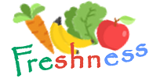
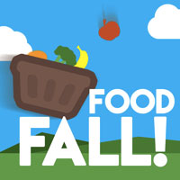

Tips
- Shop smart and realistically. Most people buy too much which leads to them throwing it away. Use our app to help plan what you need to buy and try to resist impulse purchases. Planning what you're going to eat is essential.
- Expiration and best before dates are simply a guideline; they are the manufacturer's 'best guess' on when the food will go bad. Only you have physical access to the food. Use your best judgement to determine if something is still edible.
- When cooking, don't over-serve food. The idea of massive portions is partly driven by restaurant culture, but it's started to trickle into our homes
- Save – and actually eat – leftovers. Label your leftovers so you can keep track of how long they've been in your fridge or freezer, and incorporate them into your daily or weekly routine.
- Store food in the right places. Your refrigerator and freezer will make your foods last longer. Use them!
- Avoid clutter in your fridge, pantry and freezer.Keep things neat and visible, and use the "first in, first out" principle: After you buy new groceries, move the older products to the front so you consume them first.
- Keep track of what you throw away, using our app. You will then know for your next grocery trip to buy less.
- Donate to food banks and farms. Before you throw away excess food, look into food banks and charities where you can bring items you know you're not going to consume before they go bad, and give them to people in need. You can find local food banks through Feeding America and WhyHunger.
- Try canning and pickling. Canning is a great way to preserve food (especially fruit) and increase its shelf life for months
Storing
- Leave refrigerated produce unwashed in its original packaging or wrapped loosely in a plastic bag.
- Keep your raw meat, poultry, fish and seafood separate from other food in the refrigerator at home.
- Buy cold or frozen food at the end of your shopping trip.
- Check the "best before" date on your food.
- If you use reusable grocery bags or bins, make sure to use a specific bag or bin for meat, poultry or seafood.
- Meats are usually good for 8-12 months in the freezer. Try not to forget about them!
- Wrap hard cheeses in wax paper, and then store in a resealable bag.
- To speed up ripening of fruits, store them in a brown paper bag. The bag traps ethylene gas which is a maturing agent.
- Overriped bananas can be frozen for baking delicious banana bread
Reviving
- Flimsy vegetables are still good to eat, although unappealing. Try throwing them in your next green smoothie.
- Overripe bananas can be used in banana bread. Apples too!
- Cucumbers can be put into a mason jar with vinegar and salt to make pickles.
- Potatoes look bad? Throw them in the oven with olive oil at 450 F until they are golden brown.
- Green onions and many other vegetables can be revived by storing them in water for 6 or more hours.
About
We are a group of five students of BCIT that are commited to reducing food waste. We developed this app for a project course. If you have any suggestions or comments please email us at waste23@gmail.com
Affiliated Apps
-
Take 2 is an app to help you find recipes by ingredient. Enter 2 or more recipes and be given hundreds of recipes to explore
www.take2.ca - Freshness provides you with food preservation methods for you to keep your food fresh as long as possible.
https://freshness.com -
Overcooked is an app for businesses, farmers, grocery stores, or anyone to post their surplus of foods to help connect to charities and hungry mouths.
https://overcooked.ca/ -
 Tired of managing your food? Try Food Fall! A web based game that makes learning about food waste fun.
http://foodfall.ca/